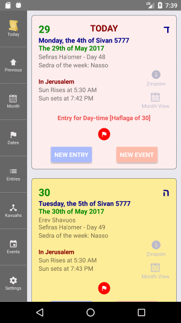
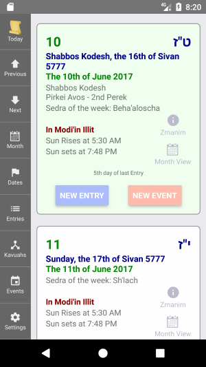
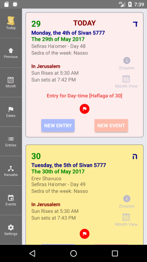
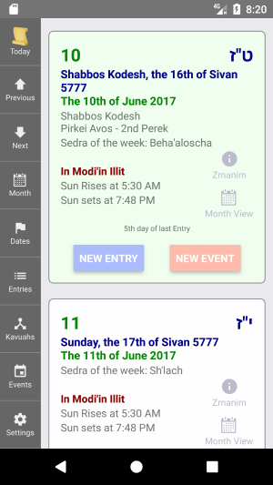

This is the screen that you will first come to when Luach first opens.
It is called the Today Screen.
On the right, there is a list of days. When Luach loads, the top day is always the current day.
By scrolling down you will see the upcoming days. You can also scroll up to see the previous days.
There is technically no limit on how far into the future or past you can scroll.
You can also scroll through the days by using the arrow buttons on the menu on the right.
You can always return to Today, by pressing on the Today button from the menu on the right.
Within the box of each day, you will find some basic information about that day such as:
Under the date, you will see the name of your current location and the times for sunrise and sunset for this day at this
location.
The location can be changed to almost any place in the world.
To change the location, press on the name of the location.
You can also change the location from the Settings Screen.
On the right side of each day, you will find a link to view the full Zmanim information for this day, and a link to view the entire month in the Month View Screen.
Here are the possible colors that can be seen:
If this day is a Flagged Date, the background color of the day will be yellow and a red flag will be shown. (see screen-shot).Light Red
The flag can be pressed to view the details for this Flagged Date.
If an Entry occurred on this day, the background color of the day will be light red and a small label of bold red text with a brief synopsis of the Entry information will be shown. (see screen-shot).Light Green
This label can be pressed to view and/or edit this Entry's information.
If this day is the 5th day from the last Entry, the background color of the day will be light green, indicating that this day is possibly the first day that a Hefesk Tahara can be done. (see screen-shot).
If you have added any Events for this day, you will see the title of the event
displayed in that days' box.
To view the complete Event details or to edit the Event, press on the Event title.
You may also see on the Today Screen, a small text label that informs how many days it has been since the last regular Entry.
Keep in mind that the number displayed is the Halachic number of days; where even a small part
of a day is also a day.
So for example, if the Entry occurred on Sunday and today is Tuesday, the text will read:
3rd day of last Entry
Press on this button to create a new Entry for this day.
You will be taken to the New Entry screen, with this day, already selected for you.
To understand what an Entry is in the Luach App, see the Entries section.
Press on this button to create a new Event for this day.
 The Today Screen
 The Today Screen with an Entry
and a Flagged Date
 The Today Screen with a Hefsek day
The Today Screen
 The Today Screen with an Entry
and a Flagged Date
 The Today Screen with a Hefsek day